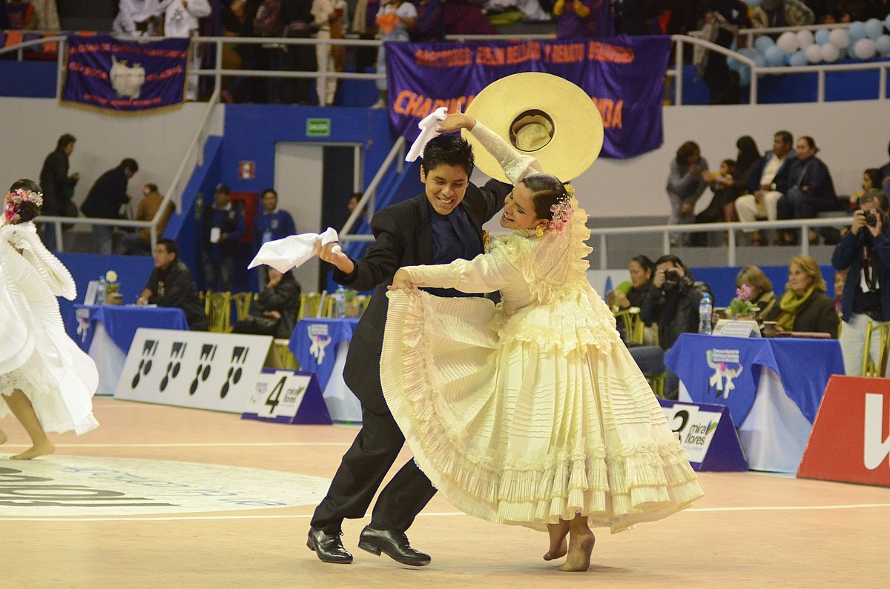
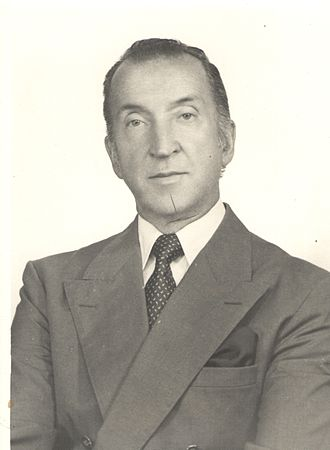
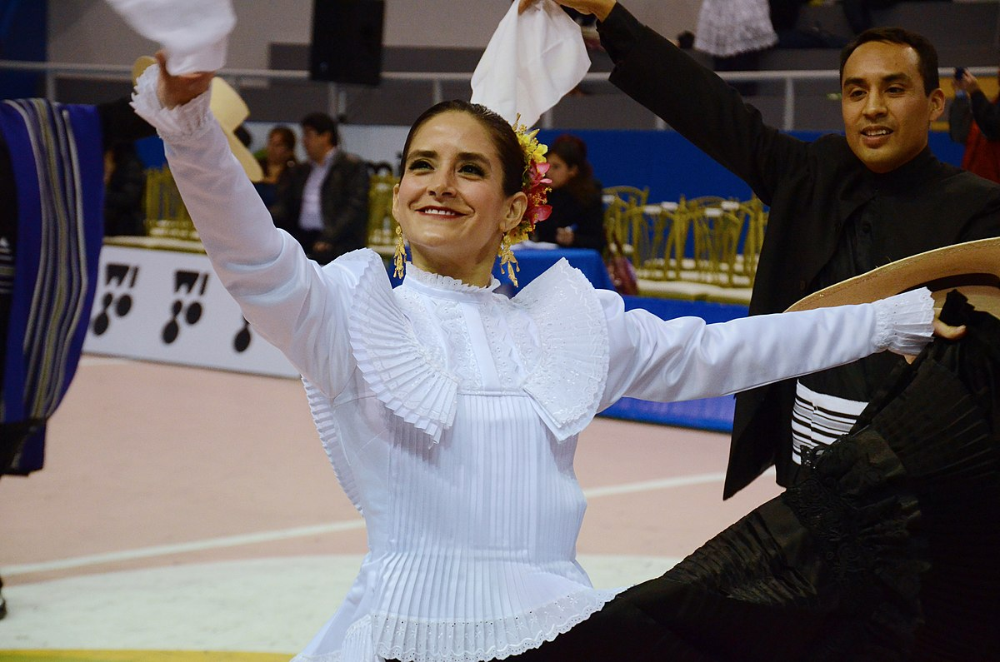
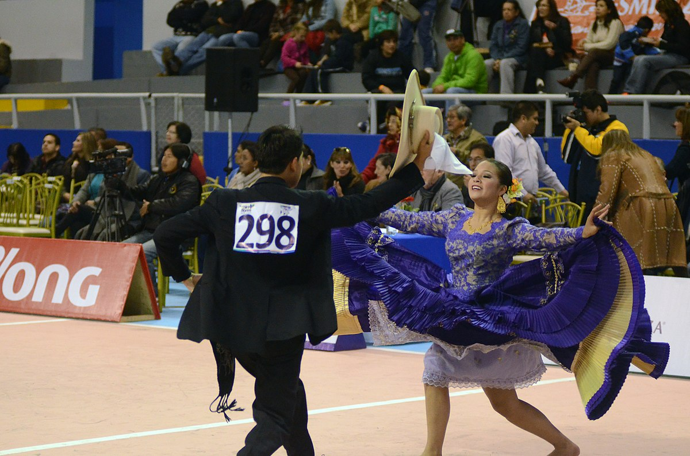

La marinera norteña es una expresión cultural peruana. Esta danza es una variación de la propia marinera, considerada como patrimonio cultural de la humanidad. Es manifestada en Trujillo, ciudad denominada como la Capital Nacional de Marinera y origen de ese estilo en el siglo XIX, pues es la principal sede del Concurso Nacional de Marinera que convoca multitudes entre concursantes, personalidades, turistas y espectadores nacionales
La marinera es producto del mestizaje hispano-indígena- africano y debe su nombre a Abelardo Gamarra Rondó, famoso escritor peruano, quien la bautizó así tras la guerra con Chile en 1879, en honor a la Marina de Guerra del Perú y las hazañas de Miguel Grau. Desde entonces se considera a este baile como un símbolo nacional. Su origen se remonta a fines del siglo XVIII, durante el esplendor del virreinato, evolucionado con el paso del tiempo y adquiriendo diversas variantes en las regiones y departamentos del Perú, así como en los países vecinos: Chile, Bolivia y Argentina, hasta donde se extendió su alegre y contagioso ritmo
En 1960 Guillermo Ganoza Vargas creó un concurso de marinera (además de una tómbola) que le permitiese recaudar fondos para resolver la crisis organizacional y promover el desarrollo del club.
| Mujeres | Hombres |
| Usan un saco y falda amplia, con pliegues; pies descalzos y el cabello trenzado. | Usan un terno de color blanco o color oscuro, una camisa, una faja, un poncho de lino y un sombrero |
|  |  |
Marinera Norteña Youtube Facebook